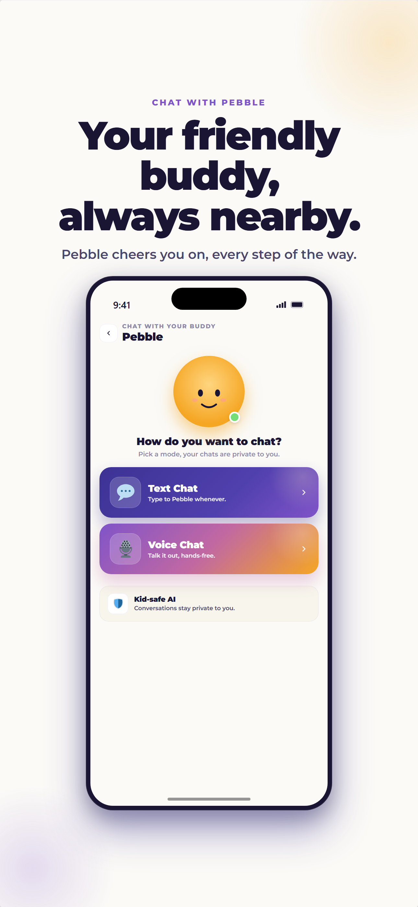

Before a child uses an AI app, check its purpose, parental consent, data collection, moderation, retention, human escalation, and stated limitations. No automated safety system is perfect, including ProudMe’s.
When an app says it uses AI for children, a parent should not have to settle for “trust us.” Reasonable questions follow: What can the AI talk about? What happens if a child says something worrying? Who sees the conversation? How long is it kept? And where does a real person enter the picture?
Those questions shaped Pebble, ProudMe’s in-app buddy for kids ages 7 to 11. Pebble can help a child reflect on a healthy choice, name a small win, or think of a manageable next step. It is not designed to be an all-knowing chatbot or a replacement for the adults in a child’s life.
No automated safety system is perfect. Our approach is therefore to narrow Pebble’s role, put multiple checks around the interaction, retain less information, and make the route back to a trusted adult unmistakable.
Start with a narrow role, not an open-ended chatbot
A child-focused AI experience is safer when its job is specific. Pebble’s job is to support reflection within ProudMe’s healthy-habits experience. A conversation might be about how movement felt today, what helped at bedtime, or one choice a child feels proud of.
Pebble is not a therapist, doctor, emergency responder, teacher, or private best friend. It should not diagnose a condition, instruct a child to hide something from a caregiver, or encourage emotional dependence. The app’s prompts and conversation context stay centered on age-appropriate wellness topics.
A useful family expectation
Try telling your child: “Pebble can help you think about a healthy habit, but it doesn’t know everything about you. For big questions, confusing feelings, or anything unsafe, come to me or another grown-up you trust.”
What happens around a Pebble conversation
Safety does not depend on a single instruction to the AI. ProudMe uses several layers, because one safeguard can miss context or become unavailable.
- The child’s message is checked. Before a message is sent to the AI model, a safety check looks for content that should not continue through an ordinary wellness conversation.
- Pebble receives a focused role. The model is given the context and limits of a healthy-habits buddy rather than being invited to answer any question without boundaries.
- The proposed reply is checked. A second check examines the response before the child sees it. This helps prevent an inappropriate generated answer from reaching the screen.
- Uncertainty takes the safer route. If the safety check is unavailable or a response cannot be approved, ProudMe blocks the exchange instead of silently bypassing the protection.
- Families can report a reply. Reporting creates a route for human review and helps the research team evaluate how the safeguards perform in real use.
This kind of layered, ongoing risk management is consistent with the broader direction of the NIST AI Risk Management Framework: risks should be identified, measured, managed, and monitored over time. For products used by children, UNICEF’s guidance on AI and children also emphasizes safety, privacy, transparency, and children’s best interests.
What happens when language is concerning?
If a message suggests immediate danger, self-harm, abuse, or another serious concern, Pebble should not improvise a long coaching conversation. ProudMe instead presents a consistent safety response that directs the child toward a trusted adult and appropriate U.S. crisis resources.
That boundary matters. An app cannot see a child’s environment, understand the full situation, make a mandated report in the way a professional might, or physically help. A parent, caregiver, teacher, counselor, clinician, or emergency responder can take actions software cannot.
For immediate help in the United States
ProudMe is not an emergency service. Call 911 when someone is in immediate danger. Call or text 988 for the Suicide & Crisis Lifeline. A child should also tell a trusted adult right away.
Families can make this pathway more familiar before a difficult moment arrives. Ask your child to name two or three trusted adults they could talk to at home, at school, or in the community. Put the names somewhere easy to remember. The goal is not to frighten children; it is to make asking for help feel normal.
Privacy is part of safety
Children’s privacy is not separate from AI safety. The more personal information a system collects and keeps, the more there is to protect. ProudMe’s design uses short retention and avoids an advertising business model.
- Chat messages are retained for 30 days, then automatically deleted.
- Voice audio is not retained by ProudMe. Speech is processed using the device’s speech-recognition tools.
- Chats are not used to build an advertising profile. ProudMe does not sell a child’s personal information or show behaviorally targeted ads.
- Parents have rights. A parent can request access to or deletion of their child’s information using the instructions in the ProudMe Privacy Policy.
- Consent comes first. ProudMe is an LSU Pedagogical Kinesiology Lab research project, and parents provide consent through the lab’s enrollment process.
The Federal Trade Commission’s overview of protecting a child’s privacy online recommends that parents understand what an app collects, how the information is used, and what controls are available. Those are good questions even when an app is educational or free.
Seven questions to ask about any AI app for kids
You do not need to be an engineer to evaluate an AI product. Before a child begins using one, look for direct answers to these questions:
- What is the AI meant to do? A focused purpose is easier to evaluate than “ask anything.”
- What is it explicitly not meant to do? Look for limits involving medical advice, mental-health care, secrecy, and emergencies.
- Are both messages and responses checked? Input-only filtering leaves half of the interaction unexamined.
- What happens when a safeguard fails? The safer default is to stop or limit the interaction.
- How long are conversations stored? “We value privacy” is not a retention period. Look for a concrete answer.
- Can a parent access or delete data? The process should be findable without digging through the app.
- How can a family reach a person? Reporting and support routes should be visible and usable.
If a company cannot answer those questions in plain language, pause before sharing a child’s information. Safety language should be specific enough for a family to make an informed choice.
What parents can do while a child uses Pebble
Technology works best as part of a family conversation, not as a sealed experience. Especially at first, explore Pebble together. Ask what your child thinks it is good at and where it might get something wrong. Remind them not to share a full name, address, school, password, phone number, or other identifying details in any chat.
Occasionally ask, “Did anything an app said make you uncomfortable or confused?” Keep the tone curious rather than investigative. Children are more likely to bring an odd interaction to an adult when they expect help instead of punishment.
Common parent questions
Can Pebble replace a counselor or doctor?
No. Pebble supports everyday reflection about healthy habits. It cannot assess, diagnose, treat, or respond to an emergency. Contact a qualified professional for health concerns and emergency services for immediate danger.
Does ProudMe keep voice recordings?
No. Voice audio is processed through device speech-recognition tools and is not retained by ProudMe. The resulting chat text follows the 30-day retention period described in the Privacy Policy.
Does ProudMe use children’s chats for advertising?
No. ProudMe does not sell children’s personal information, build advertising profiles from Pebble chats, or show behaviorally targeted advertising.
Can a parent request deletion?
Yes. Parents can request access to or deletion of their child’s information. See the Privacy Policy for the current contact and verification process.
Who can I contact with a safety concern?
Use the report option on a Pebble reply or contact the LSU Pedagogical Kinesiology Lab through the ProudMe support page or at pklab@lsu.edu.
Honest limits are a safety feature
“Kid-safe” should never mean “risk-free.” AI can misunderstand context, generate a poor response, or miss meaning that a person would catch. ProudMe’s safeguards reduce risk; they do not eliminate the need for adult attention and professional care when appropriate.
Our responsibility is to keep Pebble’s job focused, make the boundaries visible, collect only what the experience needs, evaluate safeguards over time, and give families a clear way to raise concerns. Parents should expect that level of candor from every AI product made for children.
Sources and further reading
Explore Pebble with a grown-up in the loop
Choose one manageable action, notice the attempt, and keep the conversation going. ProudMe supports healthy-habit reflection; it does not provide medical care or guarantee behavior change.
